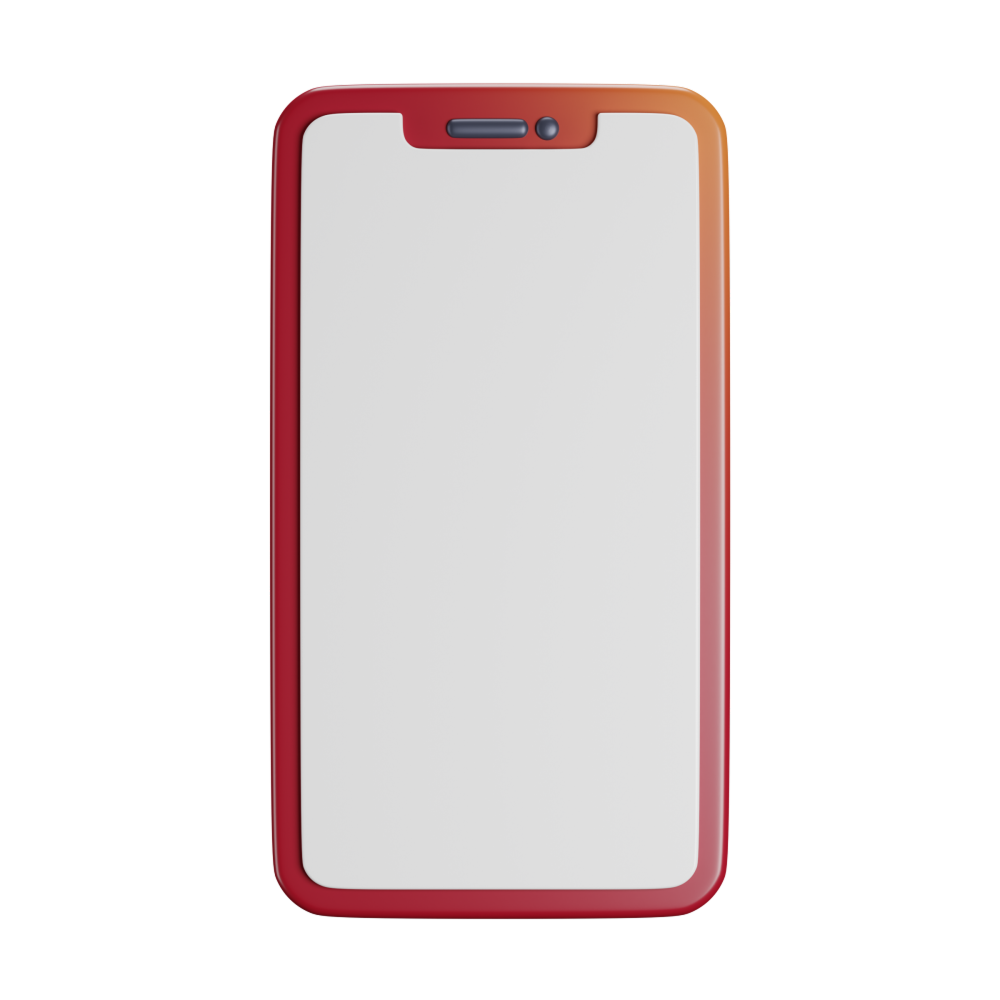

.png)

Le football romand a déjà un public : il lui manque une stratégie digitale.
Ce rapport analyse la présence digitale de romands pour en révéler les forces, les faiblesses et les leviers d'engagement.
Que contient le rapport ?
Un audit de grand ampleur
852 pages d'analyse approfondie offrant une vision claire et détaillée des écosystèmes digitaux des clubs de football romands, pour comprendre leur organisation, leurs pratiques, leurs forces et leurs axes d'amélioration.
Point de comparaison du football romand
28 clubs audités issus de différentes régions et niveaux, permettant une comparaison des forces et faiblesses. Chaque club est évalué selon des critères identiques pour identifier des tendances communes et des opportunités concrètes
Comprendre les usages et attentes de fans
Le rapport explore comment les clubs communiquent, interagissent et engagent leur communauté en ligne, notamment les plus jeunes, pour mieux répondre aux attentes de la génération Z.

Transformer la visibilité en opportunité
L'analyse met en évidence des opportunités pour développer la présence digitale des clubs : attirer des sponsors, renforcer les partenariats et accroître la visibilité locale tout en aidant chacun à mieux se positionner dans le paysage romand.